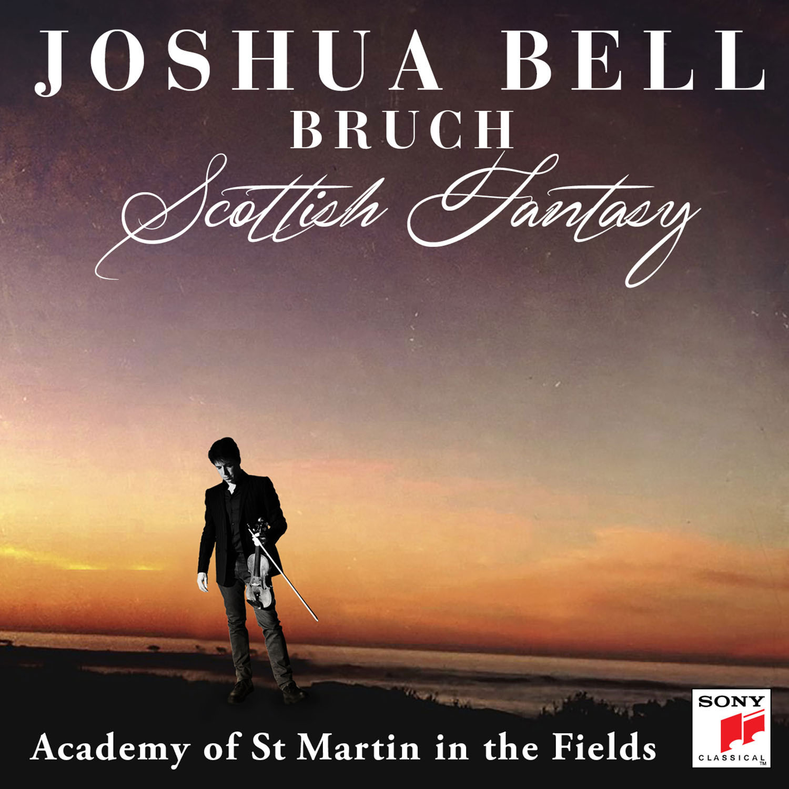
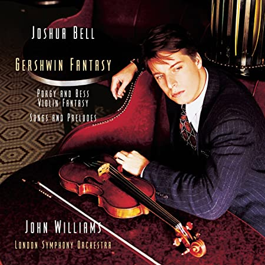

Image Source: Amazon.com |
 Image Source: Amazon.com |
 Image Source: Amazon.com |
Sony Classical, 2014
1. Violin Concerto in A Minor, BWV 1041: I. Allegro |
Sony Classical, 2018
1. Scottish Fantasy for Violin and Orchestra, Op. 46: I. Introduction: Grave, Adagio cantabile |
Sony Masterworks, 1998
1. Fantasy for Violin and Orchestra on Porgy and Bess (excerpts) |
| 2. Violin Concerto in A Minor, BWV 1041: II. Andante |
2. Scottish Fantasy for Violin and Orchestra, Op. 46: II. Scherzo: Allegro |
2. Three Preludes: I. Allegro ben ritmato e deciso |
| 3. Violin Concerto in A Minor, BWV 1041: III. Allegro assai |
3. Scottish Fantasy for Violin and Orchestra, Op. 46: III. Andante sostenuto |
3. Three Preludes: II. Andante |
| 4. Violin Concerto in E Major, BWV 1042: I. Allegro |
4. Scottish Fantasy for Violin and Orchestra, Op. 46: IV. Finale: Allegro guerriero |
4. Three Preludes: III. Allegro ben ritmato e deciso |
| 5. Violin Concerto in E Major, BWV 1042: II. Adagio |
5. Violin Concerto No. 1 in G Minor, Op. 26: I. Vorspiel: Allegro moderato |
5. I Got Rhythm (From "Girl Crazy") |
| 6. Violin Concerto in E Major, BWV 1042: III. Allegro assai |
6. Violin Concerto No. 1 in G Minor, Op. 26: II. Adagio |
6. Embraceable You (From "Girl Crazy") |
| 7. Violin Partita No. 2 in D Minor, BWV 1004: V. Chaconne (Arr. J. Milone for Violin & Orchestra) |
7. Violin Concerto No. 1 in G Minor, Op. 26: III. Finale: Allegro energico |
7. Nice Work If You Can Get It |
| 8. Orchestral Suite No. 3 in D major, BWV 1068: II. Air |
8. Digital Booklet: Bruch: Scottish Fantasy, Op. 46 / Violin Concerto No. 1 in G Minor, Op. 26 |
8. Liza (All the Clouds'll Roll Away) |
| 9. Violin Partita No. 3 in E Major, BWV 1006: III. Gavotte en rondeau (Arr. J. Milone for Violin & Orchestra) |
|
9. But Not For Me |
| 10. Digital Booklet: Bach |
|
10. Sweet and Low-Down |
|
|
11. Love Is Here To Stay |